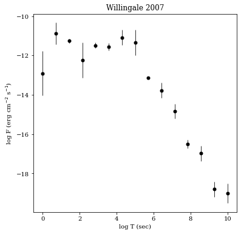
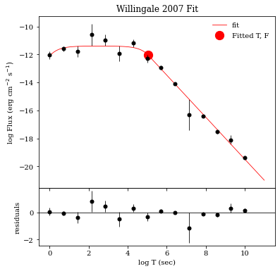
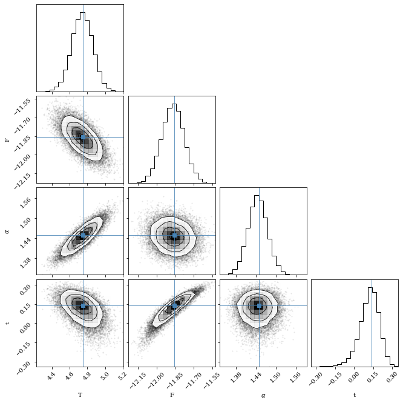
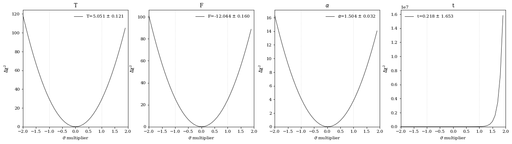
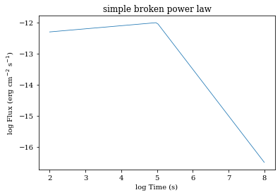
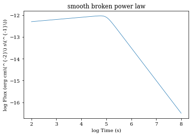
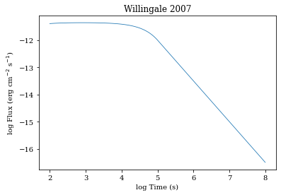

grblc.fitting package
Contents
grblc.fitting package#
Submodules#
grblc.fitting.constants module#
grblc.fitting.io module#
- grblc.fitting.io.check_datatype(filename)[source]#
Given a filename, try and guess what dataset the data comes from (e.g., Si, Kann, Oates, etc.)
For example, a file named *_Oates.txt will be interpreted as data in the same format as Sam Oates’ data.
grblc.fitting.lightcurve module#
- class grblc.fitting.lightcurve.Lightcurve(filename: Optional[str] = None, xdata=None, ydata=None, xerr=None, yerr=None, data_space: str = 'log', name: Optional[str] = None, model: Optional[grblc.fitting.model.Model] = None, fix_flux: bool = False, attrs: Dict[str, numpy.ndarray] = {})[source]#
Bases:
objectThe main module for fitting lightcurves.
Warning
Data stored in
Lightcurveobjects are always in logarithmic space; the parameterdata_spaceis only used to convert data to log space if it is not already in such. If your data is in linear space [i.e., your time data is sec, and not (log)(sec)], then you should setdata_spacetolin.- Parameters
filename (str, optional) – Name of file containing light curve data, by default None
xdata (array_like, optional) – X values, length (n,), by default None
ydata (array_like, optional) – Y values, by default None
xerr (array_like, optional) – X error, by default None
yerr (array_like, optional) – Y error, by default None
data_space (str, {log, lin}, optional) – Whether the data inputted is in log or linear space, by default ‘log’
name (str, optional) – Name of the GRB, by default
Modelname, orunknown grbif not provided.model (
Model, optional) –Modelto use in lightcurve fitting, by default Nonefix_flux (bool, optional) – In some fits, the actual flux at the end of the plateau is not the fitted value F. This applies the necessary corrections to the fitted values to account for this discrepancy. Note this only works for the
Model.W07()andModel.SMOOTH_BPL()models.attrs (dict, optional) – A
dictof array_like objects with length (n,) with any additional attributes (e.g., band) for each datapoint, by default {}.
- apply_flux_corr(inplace=False)[source]#
Applies a correction to the best-fit flux at the end of the plateau.
- Parameters
res – the result of the fit
inplace – If True, the correction will be update the flux and flux error _inside_ the Lightcurve object. Note that this may make Lightcurve.show_fit() give incorrect results.
optional – If True, the correction will be update the flux and flux error _inside_ the Lightcurve object. Note that this may make Lightcurve.show_fit() give incorrect results.
- exclude_range(xs=(), ys=(), data_space='log')[source]#
exclude_range takes a range of x and y values and excludes them from the data of the current lightcurve.
- Parameters
xs (tuple of form (xmin, xmax), optional) – Range along the x-axis to exclude.
ys (tuple of form (ymin, ymax), optional) – Range along the y-axis to exclude.
data_space (str, {log, lin}, optional) – Whether you’d like to exclude in logarithmic or linear space, by default ‘log’.
- fit(p0, run_mcmc=True, show=False, minimize_kwargs={}, emcee_kwargs={})[source]#
Fits the lightcurve data to the model. There are two steps in this process:
- Minimize the residuals using Nelder-Mead with
- Probe the posterior distribution using emcee, a
Markov-Chain Monte Carlo Python package, using the best-fit parameters from step 1 as the starting point. This is optional (via the
run_mcmcparameter), but recommended, as it gives a better view of the errors on the best-fit parameters.
- Parameters
p0 (array_list, length of number of parameters) – Initial guess for the parameters.
run_mcmc (bool, optional) – Whether to run the optional MCMC step, by default True
show (bool, optional) – [description], by default False
minimize_kwargs (dict, optional) – Keyword arguments to pass to scipy.optimize.minimize, by default {}
emcee_kwargs (dict, optional) – Keyword arguments to pass to lmfit.Minimizer.emcee, by default {}
- Returns
See lmfit.Minimizer.MinimizerResult for more information.
- Return type
lmfit.minimizer.MinimizerResult
- print_fit(detailed=False, fix_flux=None)[source]#
Print a fit report to stdout.
- Parameters
detailed (bool, optional) – Whether you’d like the full-on fit report, or a simplified version with the necessaries, by default False
fix_flux (bool, optional) – If provided, will apply the flux correction to the flux at the end of the plateau. If not provided, will default to what user set in the constructor of the Lightcurve class.
Example –
jupyter-execute:: (..) –
import numpy as np from grblc.fitting import Model, Lightcurve
model = Model.W07(vary_t=False) xdata = np.linspace(0, 10, 15) yerr = np.random.normal(0, 0.5, len(xdata)) ydata = model(xdata, 5, -12, 1.5, 0) + yerr lc = Lightcurve(xdata=xdata, ydata=ydata, yerr=yerr, model=model) lc.fit(p0=[4.5, -12.5, 1, 0], run_mcmc=False) for detailed in [False, True]:
- prompt()[source]#
A pipeline for fitting a light curve from user inputs. The data is first shown, bounds are set, parameter priors are set, and the fit is run, and saved if desired.
- read_data(filename: str)[source]#
Reads in data from a file. The data must be in the correct format. See the
io.read_data()for more information.- Parameters
filename (str) –
- Returns
xdata, ydata, xerr, yerr
- Return type
array_like
- save_fit(filename=None)[source]#
Saves fit values to either a specified file or a default file.
- Parameters
filename (str, optional) – File name to save fit values to, by default None
- set_bounds(bounds=None, xmin=- inf, xmax=inf, ymin=- inf, ymax=inf)[source]#
- Sets the bounds on the xdata and ydata to (1) plot and (2) fit with. Either
provide bounds or xmin, xmax, ymin, ymax. Assumes data is already in log space. If
Lightcurve.set_data()has been called, then the data has already been converted to log space.
- Parameters
bounds (array_like of length 4, optional) – Bounds on inputted x and y-data, by default None
xmin (float, optional) – Minimum x, by default -np.inf
xmax (float, optional) – Maximum x, by default np.inf
ymin (float, optional) – Minimum y, by default -np.inf
ymax (float, optional) – Maximum y, by default np.inf
- set_data(xdata, ydata, xerr=None, yerr=None, data_space='log')[source]#
Set the xdata and ydata, and optionally xerr and yerr of the lightcurve.
Warning
Data stored in
Lightcurveobjects are always in logarithmic space; the parameterdata_spaceis only used to convert data to log space if it is not already in such. If your data is in linear space [i.e., your time data is sec, and not log(sec)], then you should setdata_spacetolin.- Parameters
xdata (array_like) – X data
ydata (array_like) – Y data
xerr (array_like, optional) – X error, by default None
yerr (array_like, optional) – Y error, by default None
data_space (str, {log, lin}, optional) – Whether the data inputted is in logarithmic or linear space, by default ‘log’.
- set_model(model: grblc.fitting.model.Model)[source]#
Sets the lightcurve model to use.
- Parameters
model (
Model) –Modelto use in lightcurve fitting
- show(*args, **kwargs)[source]#
Calls
Lightcurve.show_fit()if a fit has been done,Lightcurve.show_data()otherwise- Returns
*args (optional) – Positional arguments to pass to
Lightcurve.show_data()orLightcurve.show_fit()**kwargs (optional) – Keyword arguments to pass to
Lightcurve.show_data()orLightcurve.show_fit()
- show_data(save=False, fig_kwargs={}, save_kwargs={})[source]#
Plots the lightcurve data. If no fit has been ran,
Lightcurve.show()will call this function.Note
This doesn’t plot any fit results. Use
Lightcurve.show_fit()to do so.Example:
import numpy as np from grblc.fitting import Model, Lightcurve model = Model.W07(vary_t=False) xdata = np.linspace(0, 10, 15) yerr = np.random.normal(0, 0.5, len(xdata)) ydata = model(xdata, 5, -12, 1.5, 0) + yerr lc = Lightcurve(xdata=xdata, ydata=ydata, yerr=yerr, model=model) lc.show_data()
- Parameters
fig_kwargs (dict, optional) – Arguments to pass to
plt.figure(), by default {}.
- show_fit(detailed=False, print_res=True, show_plot=True, show_corner=False, show_chisq=False, save_plots=None, show=True, fix_flux=None, corner_kwargs={}, chisq_kwargs={}, fig_kwargs={}, residual_ax_kwargs={}, fit_ax_kwargs={}, data_kwargs={}, fit_kwargs={})[source]#
Shows the fit to the data. If a fit has been ran,
Lightcurve.show()will call this function.This function can:
Print the best-fit parameters and their errors. (print_res)
Show the fit to the data. (show_plot)
Show the corner plot of the posterior distribution of the parameters. (show_corner)
Show the (Deltachi^2) confidence intervals of the fit. (show_chisq)
- Parameters
detailed (bool, optional) – Whether to use all plotting and printing capabilities available to show the fit, by default False
print_res (bool, optional) – Prints the fit result parameters and their errors, by default True
show_plot (bool, optional) – Shows the lightcurve and fitted model, as well as residuals, by default True
show_corner (bool, optional) – Whether to show the corner plot. Can only be used when use_mcmc was set to True when calling
Lightcurve.fit(), by default Falseshow_chisq (bool, optional) – Whether to show (Deltachi^2) confidence intervals, by default False
save_plots (bool or str, optional) – If bool, whether to save the plots or not in a folder in the current directory called plots. If str, the directory and filename to save plots (e.g.,
../../fit/grb010222.pdf), by default Noneshow (bool, optional) – Whether you want plt.show() to be ran. If not true, the figures will be returned as a dictionary, by default True
fix_flux (bool, optional) – If provided, will apply the flux correction to the flux at the end of the plateau. If not provided, will default to what user set in the constructor of the Lightcurve class.
corner_kwargs (dict, optional) – Additional arguments to pass to
corner.corner(), by default {}chisq_kwargs (dict, optional) – Additional arguments to pass to
plt.plotfor the (Deltachi^2) confidence interval plots, by default {}fig_kwargs (dict, optional) – Additional arguments to pass to
plt.figurewhen showing the fit plot, by default {}residual_ax_kwargs (dict, optional) – Additional arguments to pass to the residual axes subplot, by default {}
fit_ax_kwargs (dict, optional) – Additional arguments to pass to the fit axes subplot, by default {}
data_kwargs (dict, optional) – Additional arguments to pass to data plotting, by default {}
fit_kwargs (dict, optional) – Additional arguments to pass to the fitted model plotting, by default {}
- Returns
Dictionary of figures. Depending on the options chosen, the keys are fit, corner, chisq.
- Return type
dict
Example:
import numpy as np from grblc.fitting import Model, Lightcurve model = Model.W07() xdata = np.linspace(0, 10, 15) yerr = np.random.normal(0, 0.5, len(xdata)) ydata = model(xdata, 5, -12, 1.5, 0) + yerr lc = Lightcurve(xdata=xdata, ydata=ydata, yerr=yerr, model=model) lc.fit(p0=[4.5, -12.5, 1, 0]) lc.show_fit(detailed=True)
  The chain is shorter than 50 times the integrated autocorrelation time for 1 parameter(s). Use this estimate with caution and run a longer chain! N/50 = 100; tau: [ 75.55765186 80.39010636 56.94722648 128.8739852 ]
[[Fit Statistics]] # fitting method = emcee # function evals = 500000 # data points = 15 # variables = 4 chi-square = 14.7073253 reduced chi-square = 1.33702957 Akaike info crit = 7.70443228 Bayesian info crit = 10.5366331 [[Variables]] T: 5.05068374 +/- 0.12086526 (2.39%) (init = 5.04064) F: -12.0439173 +/- 0.15997654 (1.33%) (init = -12.02268) alpha: 1.50391660 +/- 0.03219212 (2.14%) (init = 1.506999) t: 0.21827399 +/- 1.65279373 (757.21%) (init = 0.2220766)
- to_df(data_space='lin')[source]#
Function that returns a Pandas DataFrames of the lightcurve data.
You can specify the data to be returned in either logarithmic (log) or linear (lin) space.
Each DataFrame contains the following columns:
time_sec : The time of the datapoint in seconds (xdata)
flux : The flux of the datapoint in erg cm(^{-2}) s(^{-1}) (ydata)
flux_err : The flux error of the datapoint in erg cm(^{-2}) s(^{-1}) (yerr)
- **attrsAny additional attributes of the datapoint as given in the
instantiation of the
Lightcurveobject.
- Parameters
data_space (str, {"log", "lin"}, optional) – Whether the data returned will be in logarithmic or linear space, by default “log”
- Returns
data
- Return type
pd.DataFrame
- Raises
ValueError – If any “space” other than “log” and “lin” are specified.
- to_dict(data_space='lin')[source]#
Function that returns a dictionary of the lightcurve data.
You can specify the data to be in either logarithmic (log) or linear (lin) space.
Each dictionary contains the following keys:
time_sec : The time of the datapoint in seconds (xdata)
flux : The flux of the datapoint in erg cm(^{-2}) s(^{-1}) (ydata)
#. flux_err : The flux error of the datapoint in erg cm(^{-2}) s(^{-1}) (yerr)
#. **attrs : Any additional attributes of the datapoint as given in the instantiation of the
Lightcurveobject.- Parameters
data_space (str, {"log", "lin"}, optional) – Whether the data returned will be in logarithmic or linear space, by default “lin”
- Returns
data
- Return type
dict
- Raises
ValueError – If any “space” other than “log” and “lin” are specified.
grblc.fitting.model module#
- class grblc.fitting.model.Model(func: Callable, name: str = '', slug: str = '', func_args: Optional[List[grblc.fitting.model.Parameter]] = None, bounds: Optional[list] = None)[source]#
Bases:
object- Model class for use with the
Lightcurveclass. This class is a wrapper around a function that can be used to fit a lightcurve.
- Parameters
func (Callable) – Function to fit to.
name (str, optional) – Name to the function, by default the variable name of func
slug (str, optional) – The shortened and simplified name of the function, by default name
func_args (List[Parameter], optional) – Function arguments in the form of a list of
Parameter, by default Nonebounds (list, optional) – Bounds by which x may be varied in fitting, by default
[-np.inf, np.inf, -np.inf, np.inf]
- Raises
ValueError – Makes sure all parameter names in func_args are actual parameters to the function.
- classmethod SIMPLE_BPL()[source]#
- Simple broken power law model
This is an empirical piece-wise model for GRB lightcurve afterglows.
The function is as follows:
[f(t) = left { begin{array}{ll} displaystyle{F_i left (frac{t}{T_i} right)^{-alpha_1} } & {rm for} t < T_i \ displaystyle{F_i left ( frac{t}{T_i} right )^{-alpha_2} } & {rm for} t ge T_i, \ end{array} right . ]
where the transition from the exponential to the power law occurs at the point ((T_i), (F_i)), (alpha_1) determines the temporal decay index of the initial power law, and (alpha_2) is the temporal decay index of the final power law.
As implemented, log space is used for the time (sec) and flux (erg cm(^{-2}) s(^{-1})). This means that for a light curve in which the afterglow plateau phase ends at 10,000 seconds corresponds to a (T_i) of 5.
- Pre-defined priors on these parameters are:
T : Uniform(1e-10, 10)
F : Uniform(-20, 2)
(alpha_1) : Uniform(-5, 5)
(alpha_2) : Uniform(-5, 5)
- Returns
The simple broken power law model.
- Return type
An example lightcurve is shown below:
import matplotlib.pyplot as plt import numpy as np from grblc.fitting import Model sbpl = Model.SIMPLE_BPL() x = np.linspace(2, 8, 100) T, F, alpha1, alpha2 = p = 5, -12, -0.1, 1.5 y = sbpl(x, *p) plt.plot(x, y) plt.title(sbpl.name) plt.xlabel("log Time (s)") plt.ylabel("log Flux (erg cm$^{-2}$ s$^{-1}$)") plt.show()

- classmethod SMOOTH_BPL()[source]#
- Smooth broken power law model
This is an empirical piece-wise model for GRB lightcurve afterglows.
The function is as follows:
[f(t) = F_i left (left (frac{t}{T_i} right )^{Salpha_1} + left (frac{t}{T_i} right )^{S alpha_2} right )^{-frac{1}{S}}]
where the transition from the exponential to the power law occurs at the point ((T_i), (F_i)), (alpha_1) determines the temporal decay index of the initial power law, and (alpha_2) is the temporal decay index of the final power law, and (S) is the smoothing factor.
As implemented, log space is used for the time (sec) and flux (erg cm(^{-2}) s(^{-1})). This means that for a light curve in which the afterglow plateau phase ends at 10,000 seconds corresponds to a (T_i) of 5.
- Pre-defined priors on these parameters are::
(T_i) : Uniform(1e-10, 10)
(F_i) : Uniform(-20, 2)
(alpha_1) : Uniform(-5, 5)
(alpha_2) : Uniform(-5, 5)
(S) : Uniform(-10, 2)
- Returns
The simple broken power law model.
- Return type
An example lightcurve is shown below:
import matplotlib.pyplot as plt import numpy as np from grblc.fitting import Model %matplotlib inline sbpl = Model.SMOOTH_BPL() x = np.linspace(2, 8, 100) T, F, alpha1, alpha2, S = p = 5, -12, -0.1, 1.5, 0.5 y = sbpl(x, *p) plt.plot(x, y) plt.title(sbpl.name) plt.xlabel("log Time (s)") plt.ylabel("log Flux (erg cm\(^{-2}\) s\(^{-1}\))") plt.show()

- classmethod W07(vary_t=True)[source]#
- Willingale et al. (2007) model
This is a phenomenological model for GRB lightcurve afterglows popularized in the paper by Willingale et. al, (2007). 1
Taken from his paper, it is as follows:
[f(t) = left { begin{array}{ll}displaystyle{F_i exp{left ( alpha_i left( 1 - frac{t}{T_i} right) right )} exp{left (- frac{t_i}{t} right )}} & {rm for} t < T_i \ ~ & ~ \ displaystyle{F_i left ( frac{t}{T_i} right )^{-alpha_i} exp{left ( - frac{t_i}{t} right )}} & {rm for} t ge T_i, \end{array} right .]
where the transition from the exponential to the power law occurs at the point ((T_i), (F_i)), (alpha) determines the temporal decay index of the power law, and (t_i) is the time of the initial rise of the lightcurve.
As implemented, log space is used for the time (sec) and flux (erg cm(^{-2}) s(^{-1})). This means that for a light curve in which the afterglow plateau phase ends at 10,000 seconds corresponds to a (T_i) of 5.
- Pre-defined priors on these parameters are:
(T_i) : Uniform(1e-10, 10)
(F_i) : Uniform(-20, 2)
(alpha) : Uniform(0, 5)
(t) : Uniform(0, inf)
- Parameters
vary_t (bool, optional) – The fourth parameter to this
Model, t, often does not vary the lightcurve in any way and thus is sometimes set to zero. This allows the user to make the fitter not vary it. Otherwise, you can set the vary parameter to zero viaModel[Parameter.name].vary = False. By default True.- Returns
The Willingale et al. (2007) model.
- Return type
An example lightcurve is shown below:
import matplotlib.pyplot as plt import numpy as np from grblc.fitting import Model %matplotlib inline w07 = Model.W07() x = np.linspace(2, 8, 100) T, F, alpha, t = 5, -12, 1.5, 1 y = w07(x, T, F, alpha, t) plt.plot(x, y) plt.title(w07.name) plt.xlabel("log Time (s)") plt.ylabel("log Flux (erg cm$^{-2}$ s$^{-1}$)") plt.show()

- property func: Callable#
- property func_args: Dict[str, grblc.fitting.model.Parameter]#
- Model class for use with the
- class grblc.fitting.model.Models(models: List[grblc.fitting.model.Model])[source]#
Bases:
objectCollection of models to fit together.
- property func: Callable#
- property func_args: Dict[str, grblc.fitting.model.Parameter]#
- grblc.fitting.model.chisq(x, y, sigma, model, p, return_reduced=False)[source]#
A function to calculate the chi-squared value of a given proposed solution:
\[\chi^2 = \sum_{i=1}^N \frac{(y_i - f(x_i))^2}{\sigma_i^2}\]The reduced \(\chi^2\) value, \(\chi^2_\nu\), can also be returned, and is calculated as:
\[\chi^2_\nu = \frac{\chi^2}{{\rm \# ~data~ points} - {\rm \# ~free~ params}}\]- Parameters
x (array_like) – The x and y values of the data points.
y (array_like) – The x and y values of the data points.
sigma (array_like) – Standard error of the data points.
model (callable) – The model to be fit to the data. Should take the form of a function that takes x, parameters p, and returns y in the form of
y = model(x, *p).p (array_like) – List of parameter values to be used in the model.
return_reduced (bool, optional) – Determines whether the reduced \(\chi^2\) will be returned as well, by default False
- Returns
\(\chi^2\) for each point in the dataset, along with the reduced (chi^2) value (if return_reduced=True)
- Return type
numpy.ndarray